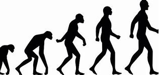

<!DOCTYPE html>
<html lang="en" style="background-color: rgb(255, 255, 255);"></html>
<head>
<style>

 p{color:rgb(0, 0, 0);
    text-align: left;
   font-size:50px;}
</style>

<style>
 h2{color:black,
 text-align: middle;
  font-size:80px;}   
</style>

<style>

    a:link, a:visited {
      background-color: #5eff00bb;
      color: black;
      padding: 14px 25px;
      text-align: center;
      text-decoration: none;
      display: inline-block;
    }
    
    a:hover, a:active {
      background-color: red;
    }
    </style>

<title style= : font-size:150px";>Monkey World</title>
<link rel="icon" type="image/x-icon" href="monkey.ico">
<h1 style="font-size:100px"> Monkey World</h1>
</head>
<body>
    <p>Dive into the fascinating universe of our closest animal relatives. 
        Whether you're a primatologist, a wildlife enthusiast, or just curious about these incredible creatures, our website is your ultimate resource for all things monkey. 
        Explore the rich diversity of monkey species, their intriguing behaviors, and their vital roles in ecosystems around the globe.
        From the dense jungles of the Amazon to the mountainous regions of Asia, learn about the habitats, social structures, and conservation efforts aimed at protecting these intelligent and playful animals.
        Join us on an adventure to discover the wonders of monkeys, their interactions with humans, and the ongoing efforts to ensure their survival in the wild. 
        Welcome, and get ready to swing into a world of knowledge and excitement!</p>
        <br>
        <h2 style="font-size: 80px;">Monkey evolution</h2>

<map name = "monkey">
<area shape="circle" coords="0,700,250" alt=monkey href="https://youtu.be/1yzuQQ-qVJw?si=DBj-mbFDRDj9o7nq" target="_self">
</map>
<p>
    The evolutionary journey from monkeys to humans spans millions of years, marked by adaptations that propelled our ancestors towards greater cognitive abilities and complex societies. 
    Through this transition, monkeys' curious nature and social intelligence laid the foundation for the emergence of human consciousness, tool use, and language. 
    Understanding this evolutionary leap allows us to appreciate the shared ancestry and remarkable transformations that shaped both monkeys and humans into the beings we are today.</p>
<h2>Meme Culture</h2>
<p>-work in progress-</p>
<a href="https://youtu.be/uBxRLw_YuSw?si=RPOYdeRS4lhYBB8C", style="font-size:50px;"> Gorilla spinning</a>
</body>
</html>
